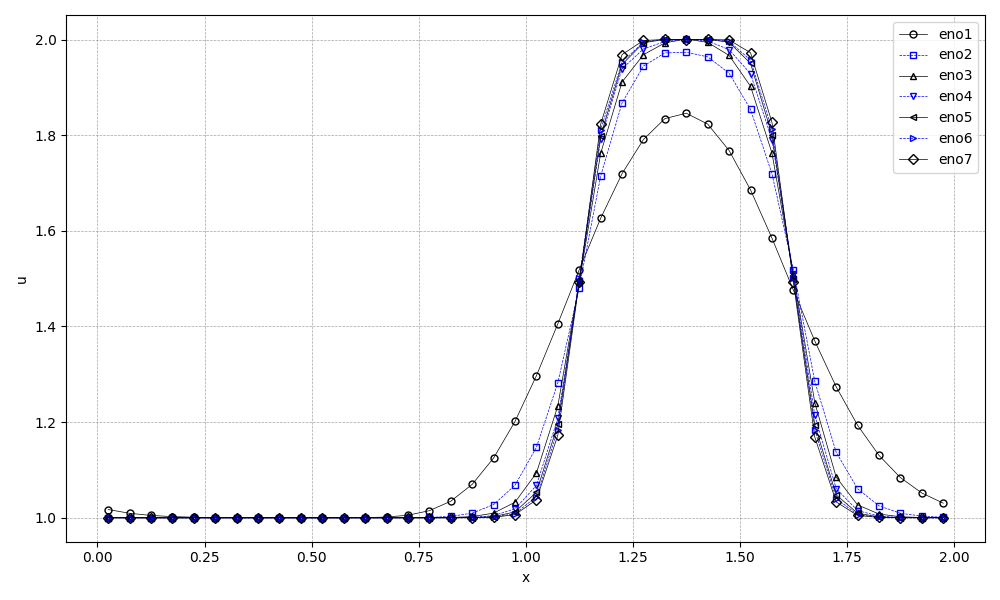
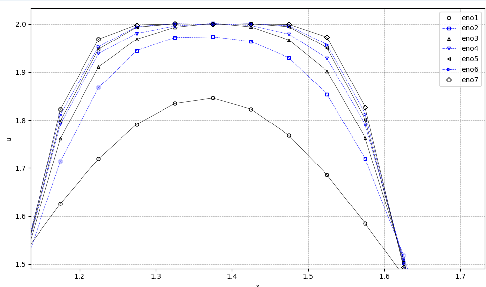

ENO¶
ENO Link¶
- WENO schemes.
- Efficient Finite Difference WENO Scheme for Hyperbolic Systems with Non-Conservative Products and Stiff Source Terms.
- Prof. Chi-Wang Shu: Mathematics in Scientific Computing.
- 《Applied Numerical Methods for PDEs》第八章 双曲型方程的数值方法(23).
- Applied-Numerical-Methods.
第八章 ENO 和 weighted ENO 方法¶
1986年 Harten[93] 提出了无振荡格式（non-oscillatory）的概念和思想。来年，他和 Engquist, Osher 和 Chakravathy 等人提出了本质无振荡（essentially non-oscillatory）格式的方案和方法[93-97]，文献[97]完整而系统地讨论和研究了这种方法的基本结构、步骤和理论。由于本文开创性的历史意义，1997年美国举世闻名的 J. Comput. Phys. 杂志为了纪念其 30 周年而出版的纪念文集中，再次重新发表了全文，Shu 为此写了专门的纪念文章[204]，可以说，ENO 方法的创立，在守恒律方程（组）的高阶和高分辨率数值方法的设计上，找到了一种比较统一而有效的途径。
ENO 方法采用了逐次扩展的节点模板，根据各阶差商的绝对值极小选择方式，提高插值方法精度而实现高分辨率和无振荡的效果。但是，方法的实施过程中，有许多中间计算结果被可惜的丢弃不用。1994 年的文献[149]，提出了 weighted ENO 方案，将这个不足作了弥补，因此得到了更为广泛的应用[203,205]。
一维标量方程的 ENO 和 weighted ENO 格式¶
以下是一个偏微分方程及其初始条件和网格划分的描述：
考虑一维标量守恒律组
设网格剖分为
单元\(I_{i}=[x_{i-1/2},x_{i+1/2}]\), 单元中点为 \(x_i =(x_{i-1/2} + x_{i+1/2})/2\)，步长为 \(\Delta x_i=x_{i+1/2}-x_{i+1/2},i=1,2,\cdots,N\)。
定义
如同前面针对 TVD 方法的讨论那样，ENO 或者 weighted ENO 方法的具体构造又有两种不同的观点。其一是积分平均型的格式，或称为有限体积型的 ENO 方法；另一种是有限差分型的 ENO 方法。
积分平均型格式或者有限体积型格式¶
将原方程在区间 \(I_i\) 上积分，并整理得
定义函数 \(u(x,t)\) 的单元平均值
则有
这里由于只有单元平均值已知，所以需要构造函数在单元边界点（半网格节点）上的值 \(u_{i-1/2}, i=0,1,\cdots,N\)。此时有限体积格式可写为
假定周期边界条件，即假定在计算区域外的数值解是可以得到的（这也适合于具有紧致支集的问题）。对于一致网格剖分 \(\Delta x_i = \Delta x\)，我们可以如下构造单元节点上的函数值：
第二类换元法¶
设 \(f(x)\) 为可积函数，\(x = x(g)\) 为连续可导函数，则有：
-
确定一个模板
例如可以取包括三个单元的模板，例如 \(S = \{I_{i-1}, I_i, I_{i+1}\}\)。
\[ \begin{array}{l} I_{i-1}&=[x_{i-3/2},x_{i-1/2}]\\ I_{i}&=[x_{i-1/2},x_{i+1/2}]\\ I_{i+1}&=[x_{i+1/2},x_{i+3/2}]\\ \end{array} \] -
构造多项式：
构造一个多项式，设为 \(p(x)\)，使其满足
\[ \frac{1}{\Delta x_j} \int_{x_{j-\frac{1}{2}}}^{x_{j+\frac{1}{2}}} p(x) dx = \bar{u}_j, \quad j = i - 1, i, i + 1 \tag{8.8} \]在所选择的模板上成立。上述模板下多项式 \(p(x)\) 是唯一确定的不超过二次多项式，设
\[ p(x) = \hat{p}(\xi) = a_0 + a_1 \xi + a_2 \xi^2, \quad \xi = \frac{x - x_i}{\Delta x_i} \]对比第二类换元法，设 \(f(x)\) 为可积函数，\(x = x(g)\) 为连续可导函数，则有：
\[ \int_{\alpha}^{\beta} f(x) \, dx = \int_{x^{-1}(\alpha)}^{x^{-1}(\beta)} f(x(g)) x' \, dg \]\[ \int_{\alpha}^{\beta} f(x) \, dx = \int_{\xi(\alpha)}^{\xi(\beta)} f(x(\xi )) x'(\xi ) \, d\xi \]这里\(f(x)=p(x)\)，\(x=x_{i}+\xi\Delta{x}_{i}\)，\(x'(\xi )=\Delta{x}_{i}\)，\(\alpha=x_{j-\frac{1}{2}}\)，\(\beta=x_{j+\frac{1}{2}}\)
\[ \int_{\alpha}^{\beta} p(x) \, dx = \int_{\xi(\alpha)}^{\xi(\beta)} p(x(\xi )) x'(\xi ) \, d\xi \]\[ \int_{\alpha}^{\beta} p(x) \, dx = \int_{\xi(\alpha)}^{\xi(\beta)} p(x(\xi )) \Delta{x}_{i} \, d\xi \]\[ \cfrac{1}{\Delta{x}_{i}}\int_{\alpha}^{\beta} p(x) \, dx = \int_{\xi(\alpha)}^{\xi(\beta)} p(x(\xi )) \, d\xi \]\[ \cfrac{1}{\Delta{x}_{i}}\int_{\alpha}^{\beta} p(x) \, dx = \int_{\xi(\alpha)}^{\xi(\beta)} \hat{p}(\xi) \, d\xi \]\[ \cfrac{1}{\Delta{x}_{i}}\int_{x_{j-\frac{1}{2}}}^{x_{j+\frac{1}{2}}} p(x) \, dx = \int_{\xi(x_{j-\frac{1}{2}})}^{\xi(x_{j+\frac{1}{2}})} \hat{p}(\xi) \, d\xi \]\[ \Delta{x}_{i}\equiv{x}_{i+\frac{1}{2}}-x_{i-\frac{1}{2}} \]\[ \begin{array}{l} \xi = \cfrac{x - x_i}{\Delta x_i}\\ \xi(\alpha) =\xi(x_{j-\frac{1}{2}})= \cfrac{x_{j-\frac{1}{2}} - x_i}{\Delta x_i}\\ \xi(\beta) =\xi(x_{j+\frac{1}{2}})= \cfrac{x_{j+\frac{1}{2}} - x_i}{\Delta x_i}\\ \end{array} \]\[ \begin{array}{l} j=i-1\\ \xi(x_{i-\frac{3}{2}})= \cfrac{x_{i-\frac{3}{2}} - x_i}{\Delta x_i}\\ \xi(x_{i-\frac{1}{2}})= \cfrac{x_{i-\frac{1}{2}} - x_i}{\Delta x_i}\\ j=i\\ \xi(x_{i-\frac{1}{2}})= \cfrac{x_{i-\frac{1}{2}} - x_i}{\Delta x_i}\\ \xi(x_{i+\frac{1}{2}})= \cfrac{x_{i+\frac{1}{2}} - x_i}{\Delta x_i}\\ j=i+1\\ \xi(x_{i+\frac{1}{2}})= \cfrac{x_{i+\frac{1}{2}} - x_i}{\Delta x_i}\\ \xi(x_{i+\frac{3}{2}})= \cfrac{x_{i+\frac{3}{2}} - x_i}{\Delta x_i}\\ \end{array} \]\[ \begin{array}{c} x_{i-\frac{3}{2}} = x_i-\frac{3}{2}\Delta{x}\\ x_{i-\frac{1}{2}} = x_i-\frac{1}{2}\Delta{x}\\ x_{i+\frac{1}{2}} = x_i+\frac{1}{2}\Delta{x}\\ x_{i+\frac{3}{2}} = x_i+\frac{3}{2}\Delta{x}\\ \end{array} \]\[ \begin{array}{l} \xi(x_{i-\frac{3}{2}})=-\frac{3}{2}\\ \xi(x_{i-\frac{1}{2}})=-\frac{1}{2}\\ \xi(x_{i+\frac{1}{2}})=\frac{1}{2}\\ \xi(x_{i+\frac{3}{2}})=\frac{3}{2}\\ \end{array} \]\[ \int_{\xi(x_{j-\frac{1}{2}})}^{\xi(x_{j+\frac{1}{2}})} \hat{p}(\xi) \, d\xi= \int_{\xi(x_{j-\frac{1}{2}})}^{\xi(x_{j+\frac{1}{2}})} (a_0 + a_1 \xi + a_2 \xi^2) \, d\xi\\ \]\[ \int_{\xi(\alpha)}^{\xi(\beta)} (a_0 + a_1 \xi + a_2 \xi^2) \, d\xi= (a_0\xi+\frac{1}{2}a_1\xi^{2}+\frac{1}{3}a_2\xi^{3})\bigg|_{\xi(\alpha)}^{\xi(\beta)}\\ \]\[ (a_0\xi+\frac{1}{2}a_1\xi^{2}+\frac{1}{3}a_2\xi^{3})\bigg|_{\xi(x_{j-\frac{1}{2}})}^{\xi(x_{j+\frac{1}{2}})}=\bar{u}_{j} \]\[ \begin{array}{l} (a_0\xi+\frac{1}{2}a_1\xi^{2}+\frac{1}{3}a_2\xi^{3})\bigg|_{\xi(x_{i-\frac{3}{2}})}^{\xi(x_{i-\frac{1}{2}})}=\bar{u}_{i-1}\\ (a_0\xi+\frac{1}{2}a_1\xi^{2}+\frac{1}{3}a_2\xi^{3})\bigg|_{\xi(x_{i-\frac{1}{2}})}^{\xi(x_{i+\frac{1}{2}})}=\bar{u}_{i}\\ (a_0\xi+\frac{1}{2}a_1\xi^{2}+\frac{1}{3}a_2\xi^{3})\bigg|_{\xi(x_{i+\frac{1}{2}})}^{\xi(x_{i+\frac{3}{2}})}=\bar{u}_{i+1}\\ \end{array} \]\[ \begin{array}{l} (a_0\xi+\frac{1}{2}a_1\xi^{2}+\frac{1}{3}a_2\xi^{3})\bigg|_{-\frac{3}{2}}^{-\frac{1}{2}}=\bar{u}_{i-1}\\ (a_0\xi+\frac{1}{2}a_1\xi^{2}+\frac{1}{3}a_2\xi^{3})\bigg|_{-\frac{1}{2}}^{+\frac{1}{2}}=\bar{u}_{i}\\ (a_0\xi+\frac{1}{2}a_1\xi^{2}+\frac{1}{3}a_2\xi^{3})\bigg|_{+\frac{1}{2}}^{+\frac{3}{2}}=\bar{u}_{i+1}\\ \end{array} \]\[ \begin{array}{l} \xi^{2}\bigg|_{-\frac{3}{2}}^{-\frac{1}{2}}=(-\frac{1}{2})^{2}-(-\frac{3}{2})^{2}=-2\\ \xi^{2}\bigg|_{-\frac{1}{2}}^{+\frac{1}{2}}=(+\frac{1}{2})^{2}-(-\frac{1}{2})^{2}=0\\ \xi^{2}\bigg|_{+\frac{1}{2}}^{+\frac{3}{2}}=(+\frac{3}{2})^{2}-(+\frac{1}{2})^{2}=2\\ \xi^{3}\bigg|_{-\frac{3}{2}}^{-\frac{1}{2}}=(-\frac{1}{2})^{3}-(-\frac{3}{2})^{3}=(-\frac{1}{8})+(\frac{27}{8})=\frac{13}{4}\\ \xi^{3}\bigg|_{-\frac{1}{2}}^{+\frac{1}{2}}=(+\frac{1}{2})^{3}-(-\frac{1}{2})^{3}=(\frac{1}{8})+(\frac{1}{8})=\frac{1}{4}\\ \xi^{3}\bigg|_{+\frac{1}{2}}^{+\frac{3}{2}}=(+\frac{3}{2})^{3}-(+\frac{1}{2})^{3}=(\frac{27}{8})-(\frac{1}{8})=\frac{13}{4}\\ \end{array} \]\[ \begin{array}{l} a_0-a_1+\frac{13}{12}a_2=\bar{u}_{i-1}\\ a_0+0a_1+\frac{1}{12}a_2=\bar{u}_{i}\\ a_0+a_1+\frac{13}{12}a_2=\bar{u}_{i+1}\\ \end{array} \]\[ A=\begin{bmatrix} 1& -1&\frac{13}{12} \\ 1& 0& \frac{1}{12}\\ 1& 1&\frac{13}{12} \end{bmatrix} \]\[ A\begin{bmatrix} a_{0}\\ a_{1}\\ a_{2}\\ \end{bmatrix}=\begin{bmatrix} b_{0}\\ b_{1}\\ b_{2}\\ \end{bmatrix}=\begin{bmatrix} \bar{u}_{i-1}\\ \bar{u}_{i}\\ \bar{u}_{i+1}\\ \end{bmatrix} \]\[ \begin{bmatrix} a_{0}\\ a_{1}\\ a_{2}\\ \end{bmatrix}=A^{-1}\begin{bmatrix} b_{0}\\ b_{1}\\ b_{2}\\ \end{bmatrix}=A^{-1}\begin{bmatrix} \bar{u}_{i-1}\\ \bar{u}_{i}\\ \bar{u}_{i+1}\\ \end{bmatrix} \]\[ A^{-1}=\begin{bmatrix} \frac{-1}{24} & \frac{13}{12} & \frac{-1}{24} \\ \frac{-1}{2} & 0 & \frac{1}{2} \\ \frac{1}{2} & -1 & \frac{1}{2} \end{bmatrix} \]\[ \begin{bmatrix} a_{0}\\ a_{1}\\ a_{2}\\ \end{bmatrix}=\begin{bmatrix} \frac{-1}{24} & \frac{13}{12} & \frac{-1}{24} \\ \frac{-1}{2} & 0 & \frac{1}{2} \\ \frac{1}{2} & -1 & \frac{1}{2} \end{bmatrix}\begin{bmatrix} b_{0}\\ b_{1}\\ b_{2}\\ \end{bmatrix}=\begin{bmatrix} \frac{-1}{24} & \frac{13}{12} & \frac{-1}{24} \\ \frac{-1}{2} & 0 & \frac{1}{2} \\ \frac{1}{2} & -1 & \frac{1}{2} \end{bmatrix}\begin{bmatrix} \bar{u}_{i-1}\\ \bar{u}_{i}\\ \bar{u}_{i+1}\\ \end{bmatrix} \]\[ \begin{array}{l} a_{0}=\frac{-1}{24}b_{0}+\frac{13}{12}b_{1}+\frac{-1}{24}b_{2}\\ a_{1}=\frac{-1}{2}b_{0}+0b_{1}+\frac{1}{2}b_{2}\\ a_{2}=\frac{1}{2}b_{0}-1b_{1}+\frac{1}{2}b_{2}\\ \end{array} \]\[ \begin{array}{l} a_{0}=\frac{-1}{24}\bar{u}_{i-1}+\frac{13}{12}\bar{u}_{i}+\frac{-1}{24}\bar{u}_{i+1}\\ a_{1}=\frac{-1}{2}\bar{u}_{i-1}+0\bar{u}_{i}+\frac{1}{2}\bar{u}_{i+1}\\ a_{2}=\frac{1}{2}\bar{u}_{i-1}-1\bar{u}_{i}+\frac{1}{2}\bar{u}_{i+1}\\ \end{array} \]\[ \begin{array}{l} p(x)=\hat{p}(\xi)=a_0+a_1\xi+a_2\xi^{2}\\ u_{i+1/2}=p(x_{i+1/2})=\hat{p}(\xi=1/2)=(a_0+a_1\xi+a_2\xi^{2})\bigg|_{\xi=1/2}\\ u_{i+1/2}=a_0+\frac{1}{2}a_1+\frac{1}{4}a_2\\ \end{array} \]\[ u_{i+1/2}=a_0+\frac{1}{2}a_1+\frac{1}{4}a_2=\begin{bmatrix} 1& \frac{1}{2}& \frac{1}{4}\\ \end{bmatrix}\begin{bmatrix} a_{0}\\ a_{1}\\ a_{2}\\ \end{bmatrix} \]\[ \begin{bmatrix} 1& \frac{1}{2}& \frac{1}{4}\\ \end{bmatrix}\begin{bmatrix} a_{0}\\ a_{1}\\ a_{2}\\ \end{bmatrix}=\begin{bmatrix} 1& \frac{1}{2}& \frac{1}{4}\\ \end{bmatrix}\begin{bmatrix} \frac{-1}{24} & \frac{13}{12} & \frac{-1}{24} \\ \frac{-1}{2} & 0 & \frac{1}{2} \\ \frac{1}{2} & -1 & \frac{1}{2} \end{bmatrix}\begin{bmatrix} b_{0}\\ b_{1}\\ b_{2}\\ \end{bmatrix} \]\[ C=\begin{bmatrix} 1& \frac{1}{2}& \frac{1}{4}\\ \end{bmatrix}\begin{bmatrix} \frac{-1}{24} & \frac{13}{12} & \frac{-1}{24} \\ \frac{-1}{2} & 0 & \frac{1}{2} \\ \frac{1}{2} & -1 & \frac{1}{2} \end{bmatrix} \]\[ C = \left[\begin{array}{c} \frac{-1}{6} & \frac{5}{6} & \frac{1}{3} \end{array}\right] \]\[ u_{i+1/2}=C\begin{bmatrix} b_{0}\\ b_{1}\\ b_{2}\\ \end{bmatrix}=\left[\begin{array}{c} \frac{-1}{6} & \frac{5}{6} & \frac{1}{3} \end{array}\right]\begin{bmatrix} b_{0}\\ b_{1}\\ b_{2}\\ \end{bmatrix} \]\[ u_{i+1/2}=\frac{-1}{6}b_{0}+\frac{5}{6}b_{1}+\frac{1}{3}b_{2} \]\[ u_{i+1/2}=\frac{-1}{6}\bar{u}_{i-1}+\frac{5}{6}\bar{u}_{i}+\frac{1}{3}\bar{u}_{i+1} \]C++ 1 2
i-r ... i-2 i-1 i i+1 i+2 ... i+s | * | ... | * | * | * | * | * | ... | * |
再取包括三个单元的模板，例如 \(S = \{I_{i-2}, I_{i-1}, I_{i}\}\)。
\[ \begin{array}{l} I_{i-2}&=[x_{i-5/2},x_{i-3/2}]\\ I_{i-1}&=[x_{i-3/2},x_{i-1/2}]\\ I_{i}&=[x_{i-1/2},x_{i+1/2}]\\ \end{array} \]\[ \begin{array}{l} (a_0\xi+\frac{1}{2}a_1\xi^{2}+\frac{1}{3}a_2\xi^{3})\bigg|_{\xi(x_{i-\frac{5}{2}})}^{\xi(x_{i-\frac{3}{2}})}=\bar{u}_{i-2}\\ (a_0\xi+\frac{1}{2}a_1\xi^{2}+\frac{1}{3}a_2\xi^{3})\bigg|_{\xi(x_{i-\frac{3}{2}})}^{\xi(x_{i-\frac{1}{2}})}=\bar{u}_{i-1}\\ (a_0\xi+\frac{1}{2}a_1\xi^{2}+\frac{1}{3}a_2\xi^{3})\bigg|_{\xi(x_{i-\frac{1}{2}})}^{\xi(x_{i+\frac{1}{2}})}=\bar{u}_{i}\\ \end{array} \]\[ \begin{array}{l} (a_0\xi+\frac{1}{2}a_1\xi^{2}+\frac{1}{3}a_2\xi^{3})\bigg|_{-\frac{5}{2}}^{-\frac{3}{2}}=\bar{u}_{i-2}\\ (a_0\xi+\frac{1}{2}a_1\xi^{2}+\frac{1}{3}a_2\xi^{3})\bigg|_{-\frac{3}{2}}^{-\frac{1}{2}}=\bar{u}_{i-1}\\ (a_0\xi+\frac{1}{2}a_1\xi^{2}+\frac{1}{3}a_2\xi^{3})\bigg|_{-\frac{1}{2}}^{+\frac{1}{2}}=\bar{u}_{i}\\ \end{array} \]\[ \begin{array}{l} \xi^{2}\bigg|_{-\frac{5}{2}}^{-\frac{3}{2}}=(-\frac{3}{2})^{2}-(-\frac{5}{2})^{2}=-4\\ \xi^{2}\bigg|_{-\frac{3}{2}}^{-\frac{1}{2}}=(-\frac{1}{2})^{2}-(-\frac{3}{2})^{2}=-2\\ \xi^{2}\bigg|_{-\frac{1}{2}}^{+\frac{1}{2}}=(+\frac{1}{2})^{2}-(-\frac{1}{2})^{2}=0\\ \xi^{3}\bigg|_{-\frac{5}{2}}^{-\frac{3}{2}}=(-\frac{3}{2})^{3}-(-\frac{5}{2})^{3}=(-\frac{27}{8})+(\frac{125}{8})=\frac{49}{4}\\ \xi^{3}\bigg|_{-\frac{3}{2}}^{-\frac{1}{2}}=(-\frac{1}{2})^{3}-(-\frac{3}{2})^{3}=(-\frac{1}{8})+(\frac{27}{8})=\frac{13}{4}\\ \xi^{3}\bigg|_{-\frac{1}{2}}^{+\frac{1}{2}}=(+\frac{1}{2})^{3}-(-\frac{1}{2})^{3}=(\frac{1}{8})+(\frac{1}{8})=\frac{1}{4}\\ \end{array} \]\[ \begin{array}{l} a_0-2a_1+\frac{49}{12}a_2={b}_{0}\\ a_0-1a_1+\frac{13}{12}a_2={b}_{1}\\ a_0+0a_1+\frac{1}{12}a_2={b}_{2}\\ \end{array} \]\[ \begin{array}{l} a_0-2a_1+\frac{49}{12}a_2=\bar{u}_{i-2}\\ a_0-1a_1+\frac{13}{12}a_2=\bar{u}_{i-1}\\ a_0+0a_1+\frac{1}{12}a_2=\bar{u}_{i}\\ \end{array} \]\[ A=\begin{bmatrix} 1& -2&\frac{49}{12} \\ 1& -1& \frac{13}{12}\\ 1& 0&\frac{1}{12} \end{bmatrix} \]\[ A\begin{bmatrix} a_{0}\\ a_{1}\\ a_{2}\\ \end{bmatrix}=\begin{bmatrix} b_{0}\\ b_{1}\\ b_{2}\\ \end{bmatrix}=\begin{bmatrix} \bar{u}_{i-2}\\ \bar{u}_{i-1}\\ \bar{u}_{i}\\ \end{bmatrix} \]\[ \begin{bmatrix} a_{0}\\ a_{1}\\ a_{2}\\ \end{bmatrix}=A^{-1}\begin{bmatrix} b_{0}\\ b_{1}\\ b_{2}\\ \end{bmatrix}=A^{-1}\begin{bmatrix} \bar{u}_{i-2}\\ \bar{u}_{i-1}\\ \bar{u}_{i}\\ \end{bmatrix} \]\[ A^{-1}= \begin{bmatrix} \cfrac{-1}{24} & \cfrac{1}{12} & \cfrac{23}{24} \\ \cfrac{1}{2} & -2 & \cfrac{3}{2} \\ \cfrac{1}{2} & -1 & \cfrac{1}{2} \end{bmatrix} \]\[ \begin{array}{l} p(x)=\hat{p}(\xi)=a_0+a_1\xi+a_2\xi^{2}\\ u_{i+1/2}=p(x_{i+1/2})=\hat{p}(\xi=1/2)=(a_0+a_1\xi+a_2\xi^{2})\bigg|_{\xi=1/2}\\ u_{i+1/2}=a_0+\frac{1}{2}a_1+\frac{1}{4}a_2\\ \end{array} \]\[ u_{i+1/2}=a_0+\frac{1}{2}a_1+\frac{1}{4}a_2=\begin{bmatrix} 1& \frac{1}{2}& \frac{1}{4}\\ \end{bmatrix}\begin{bmatrix} a_{0}\\ a_{1}\\ a_{2}\\ \end{bmatrix} \]\[ \begin{bmatrix} 1& \frac{1}{2}& \frac{1}{4}\\ \end{bmatrix}\begin{bmatrix} a_{0}\\ a_{1}\\ a_{2}\\ \end{bmatrix}=\begin{bmatrix} 1& \frac{1}{2}& \frac{1}{4}\\ \end{bmatrix}\begin{bmatrix} \cfrac{-1}{24} & \cfrac{1}{12} & \cfrac{23}{24} \\ \cfrac{1}{2} & -2 & \cfrac{3}{2} \\ \cfrac{1}{2} & -1 & \cfrac{1}{2} \end{bmatrix}\begin{bmatrix} b_{0}\\ b_{1}\\ b_{2}\\ \end{bmatrix} \]\[ C=\begin{bmatrix} 1& \frac{1}{2}& \frac{1}{4}\\ \end{bmatrix}\begin{bmatrix} \cfrac{-1}{24} & \cfrac{1}{12} & \cfrac{23}{24} \\ \cfrac{1}{2} & -2 & \cfrac{3}{2} \\ \cfrac{1}{2} & -1 & \cfrac{1}{2} \end{bmatrix} \]\[ C = \left[\begin{array}{c} \frac{1}{3} & -\frac{7}{6} & \frac{11}{6} \end{array}\right] \]\[ u_{i+1/2}=C\begin{bmatrix} b_{0}\\ b_{1}\\ b_{2}\\ \end{bmatrix}=\left[\begin{array}{c} \frac{1}{3} & -\frac{7}{6} & \frac{11}{6} \end{array}\right]\begin{bmatrix} b_{0}\\ b_{1}\\ b_{2}\\ \end{bmatrix} \]\[ u_{i+1/2}=\frac{1}{3}b_{0}-\frac{7}{6}b_{1}+\frac{11}{6}b_{2} \]\[ u_{i+1/2}=\frac{1}{3}\bar{u}_{i-2}-\frac{7}{6}\bar{u}_{i-1}+\frac{11}{6}\bar{u}_{i} \]C++ 1 2
i-r ... i-2 i-1 i i+1 i+2 ... i+s | * | ... | * | * | * | * | * | ... | * |
calc eno coef¶
| Python | |
|---|---|
1 2 3 4 5 6 7 8 9 10 11 12 13 14 15 16 17 18 19 20 21 22 23 24 25 26 27 28 29 30 31 32 33 34 35 36 37 38 39 40 41 42 43 44 45 46 47 48 49 50 51 52 53 54 55 56 57 58 59 60 61 62 63 64 65 66 67 68 69 70 71 72 73 74 75 76 77 78 79 80 81 82 83 84 85 86 87 88 89 90 91 92 93 94 95 96 97 98 99 100 101 102 103 104 105 106 107 108 109 110 111 112 113 114 115 116 117 118 119 120 121 122 123 124 | |
再取包括三个单元的模板，例如 \(S = \{I_{i}, I_{i+1}, I_{i+2}\}\)。
现在的情况是 \(j = i-1, i, i+1\)。由(8.8)式得
解之，可得
output
| PowerShell | |
|---|---|
1 2 3 4 | |
calc total eno coef¶
| Python | |
|---|---|
1 2 3 4 5 6 7 8 9 10 11 12 13 14 15 16 17 18 19 20 21 22 23 24 25 26 27 28 29 30 31 32 33 34 35 36 37 38 39 40 41 42 43 44 45 46 47 48 49 50 51 52 53 54 55 56 57 58 59 60 61 62 63 64 65 66 67 68 69 70 71 72 73 74 75 76 77 78 79 80 81 82 83 84 85 86 87 88 89 90 91 92 93 94 95 96 97 98 99 100 101 102 103 104 105 106 107 108 109 110 111 112 113 114 115 116 117 118 119 120 121 122 123 124 125 | |
output
| PowerShell | |
|---|---|
1 2 3 4 5 6 7 8 9 10 11 12 13 14 15 16 17 18 19 20 21 22 23 24 25 26 27 28 29 30 31 32 33 34 35 36 37 38 39 40 41 42 43 | |
| Python | |
|---|---|
1 2 3 4 5 6 7 8 9 10 11 12 13 14 15 16 17 18 19 20 21 22 23 24 25 26 27 28 29 30 31 32 33 34 35 36 37 38 39 40 41 42 43 44 45 46 47 48 49 50 51 52 53 54 55 56 57 58 59 60 61 62 63 64 65 66 67 68 69 70 71 72 73 74 75 76 77 78 79 80 81 82 83 84 85 86 87 88 89 90 91 92 93 94 95 96 97 98 99 100 101 102 103 104 105 106 107 108 109 110 111 112 113 114 115 116 117 118 119 120 121 122 123 124 125 | |
float output
| Text Only | |
|---|---|
1 2 3 4 5 6 7 8 9 10 11 12 13 14 15 16 17 18 19 20 21 22 23 24 25 26 27 28 29 30 31 32 33 34 35 36 37 38 39 40 41 42 43 | |
k=3¶
or
We summarize this as follows: given the \(k\) cell averages
there are constants \(c_{rj}\) such that the reconstructed value at the cell boundary \(x_{i+1/2}\)
对于\(k=3\)，有
具体为
\(r=-1\)时，有
\(r=0\)时，有
\(r=1\)时，有
\(r=2\)时，有
右侧插值¶
-
确定一个模板
C++ 1 2
i-r ... i-2 i-1 i i+1 i+2 ... i+s | * | ... | * | * | * | * | * | ... | * | 例如可以取包括三个单元的模板，例如 \(S = \{I_{i}, I_{i+1}, I_{i+2}\}\)。
\[ \begin{array}{l} I_{i}&=[x_{i-1/2},x_{i+1/2}]\\ I_{i+1}&=[x_{i+1/2},x_{i+3/2}]\\ I_{i+2}&=[x_{i+3/2},x_{i+5/2}]\\ \end{array} \] -
构造多项式：
构造一个多项式，设为 \(p(x)\)，使其满足
\[ \frac{1}{\Delta x_j} \int_{x_{j-\frac{1}{2}}}^{x_{j+\frac{1}{2}}} p(x) dx = \bar{u}_j, \quad j = i, i + 1, i + 2 \]在所选择的模板上成立。上述模板下多项式 \(p(x)\) 是唯一确定的不超过二次多项式，设
\[ p(x) = \hat{p}(\xi) = b_{0} + b_{1} \xi + b_{2} \xi^2, \quad \xi = \frac{x - x_{i+1}}{\Delta x_{i+1}} \]其中：
\[ \begin{array}{l} \Delta x_{i}&=&x_{i+1/2}-x_{i-1/2}\\ \Delta x_{i+1}&=&x_{i+3/2}-x_{i+1/2}\\ \end{array} \]对比第二类换元法，设 \(f(x)\) 为可积函数，\(x = x(g)\) 为连续可导函数，则有：
\[ \int_{\alpha}^{\beta} f(x) \, dx = \int_{x^{-1}(\alpha)}^{x^{-1}(\beta)} f(x(g)) x' \, dg \]\[ \int_{\alpha}^{\beta} f(x) \, dx = \int_{\xi(\alpha)}^{\xi(\beta)} f(x(\xi )) x'(\xi ) \, d\xi \]这里\(f(x)=p(x)\)，\(x=x_{i+1}+\xi\Delta{x}_{i+1}\)，\(x'(\xi )=\Delta{x}_{i+1}\)，\(\alpha=x_{j-\frac{1}{2}}\)，\(\beta=x_{j+\frac{1}{2}}\)
\[ \int_{\alpha}^{\beta} p(x) \, dx = \int_{\xi(\alpha)}^{\xi(\beta)} p(x(\xi )) x'(\xi ) \, d\xi \]\[ \int_{\alpha}^{\beta} p(x) \, dx = \int_{\xi(\alpha)}^{\xi(\beta)} p(x(\xi )) \Delta{x}_{i+1} \, d\xi \]C++ 1 2
i-r ... i-2 i-1 i i+1 i+2 ... i+s | * | ... | * | * | * | * | * | ... | * |\[ \Delta{x}_{i+1}\equiv{x}_{i+\frac{3}{2}}-x_{i+\frac{1}{2}} \]\[ \begin{array}{l} \xi = \cfrac{x - x_{i+1}}{\Delta x_{i+1}}\\ \xi(\alpha) =\xi(x_{j-\frac{1}{2}})= \cfrac{x_{j-\frac{1}{2}} - x_{i+1}}{\Delta x_{i+1}}\\ \xi(\beta) =\xi(x_{j+\frac{1}{2}})= \cfrac{x_{j+\frac{1}{2}} - x_{i+1}}{\Delta x_{i+1}}\\ \end{array} \]\[ \begin{array}{l} j=i\\ \xi(x_{i-\frac{1}{2}})= \cfrac{x_{i-\frac{1}{2}} - x_{i+1}}{\Delta x_{i+1}}\\ \xi(x_{i+\frac{1}{2}})= \cfrac{x_{i+\frac{1}{2}} - x_{i+1}}{\Delta x_{i+1}}\\ j=i+1\\ \xi(x_{i+\frac{1}{2}})= \cfrac{x_{i+\frac{1}{2}} - x_{i+1}}{\Delta x_{i+1}}\\ \xi(x_{i+\frac{3}{2}})= \cfrac{x_{i+\frac{3}{2}} - x_{i+1}}{\Delta x_{i+1}}\\ j=i+2\\ \xi(x_{i+\frac{3}{2}})= \cfrac{x_{i+\frac{3}{2}} - x_{i+1}}{\Delta x_{i+1}}\\ \xi(x_{i+\frac{5}{2}})= \cfrac{x_{i+\frac{5}{2}} - x_{i+1}}{\Delta x_{i+1}}\\ j=i+3\\ \xi(x_{i+\frac{5}{2}})= \cfrac{x_{i+\frac{5}{2}} - x_{i+1}}{\Delta x_{i+1}}\\ \xi(x_{i+\frac{7}{2}})= \cfrac{x_{i+\frac{7}{2}} - x_{i+1}}{\Delta x_{i+1}}\\ \end{array} \]\[ \begin{array}{l} x=x_{i+1}+\xi\Delta{x}_{i+1}\\ x_{i-\frac{1}{2}} = x_{i+1}-\frac{3}{2}\Delta{x}\\ x_{i+\frac{1}{2}} = x_{i+1}-\frac{1}{2}\Delta{x}\\ x_{i+\frac{3}{2}} = x_{i+1}+\frac{1}{2}\Delta{x}\\ x_{i+\frac{5}{2}} = x_{i+1}+\frac{3}{2}\Delta{x}\\ x_{i+\frac{7}{2}} = x_{i+1}+\frac{7}{2}\Delta{x}\\ \end{array} \]\[ \begin{array}{l} \xi(x_{i-\frac{1}{2}})=-\frac{3}{2}\\ \xi(x_{i+\frac{1}{2}})=-\frac{1}{2}\\ \xi(x_{i+\frac{3}{2}})=\frac{1}{2}\\ \xi(x_{i+\frac{5}{2}})=\frac{3}{2}\\ \xi(x_{i+\frac{7}{2}})=\frac{5}{2}\\ \end{array} \]\[ \int_{\xi(x_{j-\frac{1}{2}})}^{\xi(x_{j+\frac{1}{2}})} \hat{p}(\xi) \, d\xi= \int_{\xi(x_{j-\frac{1}{2}})}^{\xi(x_{j+\frac{1}{2}})} (b_{0} + b_{1} \xi + b_{2} \xi^2) \, d\xi\\ \]\[ \int_{\xi(\alpha)}^{\xi(\beta)} (b_{0} + b_{1} \xi + b_{2} \xi^2) \, d\xi= (b_{0}\xi+\frac{1}{2}b_{1}\xi^{2}+\frac{1}{3}b_{2}\xi^{3})\bigg|_{\xi(\alpha)}^{\xi(\beta)}\\ \]\[ (b_{0}\xi+\frac{1}{2}b_{1}\xi^{2}+\frac{1}{3}b_{2}\xi^{3})\bigg|_{\xi(x_{j-\frac{1}{2}})}^{\xi(x_{j+\frac{1}{2}})}=\bar{u}_{j} \]\[ \begin{array}{l} (b_{0}\xi+\frac{1}{2}b_{1}\xi^{2}+\frac{1}{3}b_{2}\xi^{3})\bigg|_{\xi(x_{i-\frac{1}{2}})}^{\xi(x_{i+\frac{1}{2}})}=\bar{u}_{i}\\ (b_{0}\xi+\frac{1}{2}b_{1}\xi^{2}+\frac{1}{3}b_{2}\xi^{3})\bigg|_{\xi(x_{i+\frac{1}{2}})}^{\xi(x_{i+\frac{3}{2}})}=\bar{u}_{i+1}\\ (b_{0}\xi+\frac{1}{2}b_{1}\xi^{2}+\frac{1}{3}b_{2}\xi^{3})\bigg|_{\xi(x_{i+\frac{3}{2}})}^{\xi(x_{i+\frac{5}{2}})}=\bar{u}_{i+2}\\ \end{array} \]\[ \begin{array}{l} (b_{0}\xi+\frac{1}{2}b_{1}\xi^{2}+\frac{1}{3}b_{2}\xi^{3})\bigg|_{-\frac{3}{2}}^{-\frac{1}{2}}=\bar{u}_{i}\\ (b_{0}\xi+\frac{1}{2}b_{1}\xi^{2}+\frac{1}{3}b_{2}\xi^{3})\bigg|_{-\frac{1}{2}}^{+\frac{1}{2}}=\bar{u}_{i+1}\\ (b_{0}\xi+\frac{1}{2}b_{1}\xi^{2}+\frac{1}{3}b_{2}\xi^{3})\bigg|_{+\frac{1}{2}}^{+\frac{3}{2}}=\bar{u}_{i+2}\\ \end{array} \]\[ \begin{array}{l} \xi^{2}\bigg|_{-\frac{3}{2}}^{-\frac{1}{2}}=(-\frac{1}{2})^{2}-(-\frac{3}{2})^{2}=-2\\ \xi^{2}\bigg|_{-\frac{1}{2}}^{+\frac{1}{2}}=(+\frac{1}{2})^{2}-(-\frac{1}{2})^{2}=0\\ \xi^{2}\bigg|_{+\frac{1}{2}}^{+\frac{3}{2}}=(+\frac{3}{2})^{2}-(+\frac{1}{2})^{2}=2\\ \xi^{3}\bigg|_{-\frac{3}{2}}^{-\frac{1}{2}}=(-\frac{1}{2})^{3}-(-\frac{3}{2})^{3}=(-\frac{1}{8})+(\frac{27}{8})=\frac{13}{4}\\ \xi^{3}\bigg|_{-\frac{1}{2}}^{+\frac{1}{2}}=(+\frac{1}{2})^{3}-(-\frac{1}{2})^{3}=(\frac{1}{8})+(\frac{1}{8})=\frac{1}{4}\\ \xi^{3}\bigg|_{+\frac{1}{2}}^{+\frac{3}{2}}=(+\frac{3}{2})^{3}-(+\frac{1}{2})^{3}=(\frac{27}{8})-(\frac{1}{8})=\frac{13}{4}\\ \end{array} \]\[ \begin{array}{l} b_{0}-b_{1}+\frac{13}{12}b_{2}=\bar{u}_{i}\\ b_{0}+0b_{1}+\frac{1}{12}b_{2}=\bar{u}_{i+1}\\ b_{0}+b_{1}+\frac{13}{12}b_{2}=\bar{u}_{i+2}\\ \end{array} \]\[ A=\begin{bmatrix} 1& -1&\frac{13}{12} \\ 1& 0& \frac{1}{12}\\ 1& 1&\frac{13}{12} \end{bmatrix} \]\[ A\begin{bmatrix} b_{0}\\ b_{1}\\ b_{2}\\ \end{bmatrix}=\begin{bmatrix} f_{0}\\ f_{1}\\ f_{2}\\ \end{bmatrix}=\begin{bmatrix} \bar{u}_{i}\\ \bar{u}_{i+1}\\ \bar{u}_{i+2}\\ \end{bmatrix} \]\[ \begin{bmatrix} b_{0}\\ b_{1}\\ b_{2}\\ \end{bmatrix}=A^{-1}\begin{bmatrix} f_{0}\\ f_{1}\\ f_{2}\\ \end{bmatrix}=A^{-1}\begin{bmatrix} \bar{u}_{i}\\ \bar{u}_{i+1}\\ \bar{u}_{i+2}\\ \end{bmatrix} \]\[ A^{-1}=\begin{bmatrix} \frac{-1}{24} & \frac{13}{12} & \frac{-1}{24} \\ \frac{-1}{2} & 0 & \frac{1}{2} \\ \frac{1}{2} & -1 & \frac{1}{2} \end{bmatrix} \]\[ \begin{bmatrix} b_{0}\\ b_{1}\\ b_{2}\\ \end{bmatrix}=\begin{bmatrix} \frac{-1}{24} & \frac{13}{12} & \frac{-1}{24} \\ \frac{-1}{2} & 0 & \frac{1}{2} \\ \frac{1}{2} & -1 & \frac{1}{2} \end{bmatrix}\begin{bmatrix} f_{0}\\ f_{1}\\ f_{2}\\ \end{bmatrix}=\begin{bmatrix} \frac{-1}{24} & \frac{13}{12} & \frac{-1}{24} \\ \frac{-1}{2} & 0 & \frac{1}{2} \\ \frac{1}{2} & -1 & \frac{1}{2} \end{bmatrix}\begin{bmatrix} \bar{u}_{i}\\ \bar{u}_{i+1}\\ \bar{u}_{i+2}\\ \end{bmatrix} \]\[ \begin{array}{l} b_{0}=\frac{-1}{24}f_{0}+\frac{13}{12}f_{1}+\frac{-1}{24}f_{2}\\ b_{1}=\frac{-1}{2}f_{0}+0f_{1}+\frac{1}{2}f_{2}\\ b_{2}=\frac{1}{2}f_{0}-1f_{1}+\frac{1}{2}f_{2}\\ \end{array} \]\[ \begin{array}{l} b_{0}=\frac{-1}{24}\bar{u}_{i}+\frac{13}{12}\bar{u}_{i+1}+\frac{-1}{24}\bar{u}_{i+2}\\ b_{1}=\frac{-1}{2}\bar{u}_{i}+0\bar{u}_{i+1}+\frac{1}{2}\bar{u}_{i+2}\\ b_{2}=\frac{1}{2}\bar{u}_{i}-1\bar{u}_{i+1}+\frac{1}{2}\bar{u}_{i+2}\\ \end{array} \]\[ \begin{array}{l} \xi(x_{i-\frac{1}{2}})=-\frac{3}{2}\\ \xi(x_{i+\frac{1}{2}})=-\frac{1}{2}\\ \xi(x_{i+\frac{3}{2}})=\frac{1}{2}\\ \xi(x_{i+\frac{5}{2}})=\frac{3}{2}\\ \end{array} \]\[ \begin{array}{l} p(x)=\hat{p}(\xi)=b_{0}+b_{1}\xi+b_{2}\xi^{2}\\ u_{i+1/2}=p(x_{i+1/2})=\hat{p}(\xi=-1/2)=(b_{0}+b_{1}\xi+b_{2}\xi^{2})\bigg|_{\xi=-1/2}\\ u_{i+1/2}=b_{0}-\frac{1}{2}b_{1}+\frac{1}{4}b_{2}\\ \end{array} \]\[ u_{i+1/2}=b_{0}-\frac{1}{2}b_{1}+\frac{1}{4}b_{2}=\begin{bmatrix} 1& -\frac{1}{2}& \frac{1}{4}\\ \end{bmatrix}\begin{bmatrix} b_{0}\\ b_{1}\\ b_{2}\\ \end{bmatrix} \]\[ \begin{bmatrix} 1& -\frac{1}{2}& \frac{1}{4}\\ \end{bmatrix}\begin{bmatrix} b_{0}\\ b_{1}\\ b_{2}\\ \end{bmatrix}=\begin{bmatrix} 1& -\frac{1}{2}& \frac{1}{4}\\ \end{bmatrix}\begin{bmatrix} \frac{-1}{24} & \frac{13}{12} & \frac{-1}{24} \\ \frac{-1}{2} & 0 & \frac{1}{2} \\ \frac{1}{2} & -1 & \frac{1}{2} \end{bmatrix}\begin{bmatrix} f_{0}\\ f_{1}\\ f_{2}\\ \end{bmatrix} \]\[ C=\begin{bmatrix} 1& -\frac{1}{2}& \frac{1}{4}\\ \end{bmatrix}\begin{bmatrix} \frac{-1}{24} & \frac{13}{12} & \frac{-1}{24} \\ \frac{-1}{2} & 0 & \frac{1}{2} \\ \frac{1}{2} & -1 & \frac{1}{2} \end{bmatrix} \]\[ C = \left[\begin{array}{c} \frac{1}{3} & \frac{5}{6} & -\frac{1}{6} \end{array}\right] \]\[ u_{i+1/2}=C\begin{bmatrix} f_{0}\\ f_{1}\\ f_{2}\\ \end{bmatrix}=\left[\begin{array}{c} \frac{1}{3} & \frac{5}{6} & -\frac{1}{6} \end{array}\right]\begin{bmatrix} f_{0}\\ f_{1}\\ f_{2}\\ \end{bmatrix} \]\[ u_{i+1/2}=\frac{1}{3}f_{0}+\frac{5}{6}f_{1}-\frac{1}{6}f_{2} \]\[ u_{i+1/2}=\frac{1}{3}\bar{u}_{i}+\frac{5}{6}\bar{u}_{i+1}-\frac{1}{6}\bar{u}_{i+2} \]模板为\(S = \{I_{i}, I_{i+1}, I_{i+2}\}\)。
作为对比，原左侧插值
\[ u_{i+1/2}=\frac{-1}{6}\bar{u}_{i-1}+\frac{5}{6}\bar{u}_{i}+\frac{1}{3}\bar{u}_{i+1} \]模板为\(S = \{I_{i-1}, I_{i}, I_{i+1}\}\)。
再取包括三个单元的模板，例如 \(S = \{I_{i+1}, I_{i+2}, I_{i+3}\}\)。¶
\[ \begin{array}{l} I_{i+1}&=[x_{i+1/2},x_{i+3/2}]\\ I_{i+2}&=[x_{i+3/2},x_{i+5/2}]\\ I_{i+3}&=[x_{i+4/2},x_{i+7/2}]\\ \end{array} \]\[ \begin{array}{l} \xi = \frac{x - x_{i+1}}{\Delta x_{i+1}}\\ \xi = \frac{x - x_{i+1}}{\Delta x}\\ \xi_{2}-\xi_{1} = \frac{x(\xi_{2}) - x_{i+1}}{\Delta x}-\frac{x(\xi_{1}) - x_{i+1}}{\Delta x}\\ \xi_{2}-\xi_{1} = \frac{x(\xi_{2}) - x(\xi_{1})}{\Delta x}\\ \end{array} \]\[ \begin{array}{l} \xi(x_{i+\frac{1}{2}})=-\frac{1}{2}\\ \xi(x_{i+1})=0\\ \xi(x_{i+\frac{3}{2}})=\frac{1}{2}\\ \end{array} \]\[ \begin{array}{l} \xi = \cfrac{x - x_{i+1}}{\Delta x}\\ \xi(x_{j-\frac{1}{2}})= \cfrac{x_{j-\frac{1}{2}} - x_{i+1}}{\Delta x}\\ \xi(x_{j+\frac{1}{2}})= \cfrac{x_{j+\frac{1}{2}} - x_{i+1}}{\Delta x}\\ \end{array} \]\[ \begin{array}{l} \xi = \cfrac{x - x_{i+1}}{\Delta x}\\ x_{j} - x_{i}=(j-i)\Delta x\\ x_{j} - x_{i+1}=(j-i-1)\Delta x\\ x_{j-\frac{1}{2}} - x_{i}=(j-\frac{1}{2}-i)\Delta x\\ x_{j-\frac{1}{2}} - x_{i+1}=(j-\frac{1}{2}-i-1)\Delta x\\ x_{j+\frac{1}{2}} - x_{i+1}=(j+\frac{1}{2}-i-1)\Delta x\\ \end{array} \]\[ \begin{array}{l} \xi = \cfrac{x - x_{i+1}}{\Delta x}\\ \xi(x_{j})= \cfrac{x_{j} - x_{i+1}}{\Delta x}=j-i-1\\ \xi(x_{j-\frac{1}{2}})= (j-\frac{1}{2}-i-1)\\ \xi(x_{j+\frac{1}{2}})= (j+\frac{1}{2}-i-1)\\ \end{array} \]\[ \begin{array}{l} \xi = \cfrac{x - x_{i+1}}{\Delta x}\\ \xi(x_{j})= \cfrac{x_{j} - x_{i+1}}{\Delta x}=j-i-1\\ \xi(x_{j-\frac{1}{2}})= (j-\frac{1}{2}-i-1)\\ \xi(x_{j+\frac{1}{2}})= (j+\frac{1}{2}-i-1)\\ j=i-2, \xi(x_{i-\frac{5}{2}})= (j-\frac{1}{2}-i-1)=(-\frac{7}{2})\\ j=i-1, \xi(x_{i-\frac{3}{2}})= (j-\frac{1}{2}-i-1)=(-\frac{5}{2})\\ j=i, \xi(x_{i-\frac{1}{2}})= (j-\frac{1}{2}-i-1)=(-\frac{3}{2})\\ j=i+1, \xi(x_{i+\frac{1}{2}})= (j-\frac{1}{2}-i-1)=(-\frac{1}{2})\\ j=i+2, \xi(x_{i+\frac{3}{2}})= (j-\frac{1}{2}-i-1)=(\frac{1}{2})\\ j=i+3, \xi(x_{i+\frac{5}{2}})= (j-\frac{1}{2}-i-1)=(\frac{3}{2})\\ \end{array} \]\[ \begin{array}{l} \xi(x_{i-\frac{1}{2}})=-\frac{3}{2}\\ \xi(x_{i+\frac{1}{2}})=-\frac{1}{2}\\ \xi(x_{i+\frac{3}{2}})=\frac{1}{2}\\ \xi(x_{i+\frac{5}{2}})=\frac{3}{2}\\ \xi(x_{i+\frac{7}{2}})=\frac{5}{2}\\ \end{array} \]\[ \begin{array}{l} (b_{0}\xi+\frac{1}{2}b_{1}\xi^{2}+\frac{1}{3}b_{2}\xi^{3})\bigg|_{\xi(x_{i+\frac{1}{2}})}^{\xi(x_{i+\frac{3}{2}})}=\bar{u}_{i+1}\\ (b_{0}\xi+\frac{1}{2}b_{1}\xi^{2}+\frac{1}{3}b_{2}\xi^{3})\bigg|_{\xi(x_{i+\frac{3}{2}})}^{\xi(x_{i+\frac{5}{2}})}=\bar{u}_{i+2}\\ (b_{0}\xi+\frac{1}{2}b_{1}\xi^{2}+\frac{1}{3}b_{2}\xi^{3})\bigg|_{\xi(x_{i+\frac{5}{2}})}^{\xi(x_{i+\frac{7}{2}})}=\bar{u}_{i+3}\\ \end{array} \]\[ \begin{array}{l} (b_{0}\xi+\frac{1}{2}b_{1}\xi^{2}+\frac{1}{3}b_{2}\xi^{3})\bigg|_{-\frac{1}{2}}^{+\frac{1}{2}}=\bar{u}_{i+1}\\ (b_{0}\xi+\frac{1}{2}b_{1}\xi^{2}+\frac{1}{3}b_{2}\xi^{3})\bigg|_{+\frac{1}{2}}^{+\frac{3}{2}}=\bar{u}_{i+2}\\ (b_{0}\xi+\frac{1}{2}b_{1}\xi^{2}+\frac{1}{3}b_{2}\xi^{3})\bigg|_{+\frac{3}{2}}^{+\frac{5}{2}}=\bar{u}_{i+3}\\ \end{array} \]\[ \begin{array}{l} \xi^{2}\bigg|_{-\frac{1}{2}}^{+\frac{1}{2}}=(+\frac{1}{2})^{2}-(-\frac{1}{2})^{2}=0\\ \xi^{2}\bigg|_{+\frac{1}{2}}^{+\frac{3}{2}}=(+\frac{3}{2})^{2}-(+\frac{1}{2})^{2}=2\\ \xi^{2}\bigg|_{+\frac{3}{2}}^{+\frac{5}{2}}=(+\frac{5}{2})^{2}-(+\frac{3}{2})^{2}=4\\ \xi^{3}\bigg|_{-\frac{1}{2}}^{+\frac{1}{2}}=(+\frac{1}{2})^{3}-(-\frac{1}{2})^{3}=\frac{1}{4}\\ \xi^{3}\bigg|_{+\frac{1}{2}}^{+\frac{3}{2}}=(+\frac{3}{2})^{3}-(+\frac{1}{2})^{3}=\frac{13}{4}\\ \xi^{3}\bigg|_{+\frac{3}{2}}^{+\frac{5}{2}}=(+\frac{5}{2})^{3}-(+\frac{3}{2})^{3}=\frac{49}{4}\\ \end{array} \]\[ \begin{array}{l} b_{0}+0b_{1}+\frac{1}{12}b_{2}={f}_{0}\\ b_{0}+1b_{1}+\frac{13}{12}b_{2}={f}_{1}\\ b_{0}+2b_{1}+\frac{49}{12}b_{2}={f}_{2}\\ \end{array} \]\[ \begin{array}{l} b_{0}+0b_{1}+\frac{1}{12}b_{2}=\bar{u}_{i+1}\\ b_{0}+1b_{1}+\frac{13}{12}b_{2}=\bar{u}_{i+2}\\ b_{0}+2b_{1}+\frac{49}{12}b_{2}=\bar{u}_{i+3}\\ \end{array} \]\[ A=\begin{bmatrix} 1& 0&\frac{1}{12} \\ 1& 1& \frac{13}{12}\\ 1& 2&\frac{49}{12} \end{bmatrix} \]\[ A\begin{bmatrix} b_{0}\\ b_{1}\\ b_{2}\\ \end{bmatrix}=\begin{bmatrix} f_{0}\\ f_{1}\\ f_{2}\\ \end{bmatrix}=\begin{bmatrix} \bar{u}_{i+1}\\ \bar{u}_{i+2}\\ \bar{u}_{i+3}\\ \end{bmatrix} \]\[ \begin{bmatrix} b_{0}\\ b_{1}\\ b_{2}\\ \end{bmatrix}=A^{-1}\begin{bmatrix} f_{0}\\ f_{1}\\ f_{2}\\ \end{bmatrix}=A^{-1}\begin{bmatrix} \bar{u}_{i+1}\\ \bar{u}_{i+2}\\ \bar{u}_{i+3}\\ \end{bmatrix} \]\[ A^{-1}= \begin{bmatrix} \cfrac{23}{24} & \cfrac{1}{12} & -\cfrac{1}{24} \\ -\cfrac{3}{2} & 2 & -\cfrac{1}{2} \\ \cfrac{1}{2} & -1 & \cfrac{1}{2} \end{bmatrix} \]\[ \begin{array}{l} p(x)=\hat{p}(\xi)=b_{0}+b_{1}\xi+b_{2}\xi^{2}\\ u_{i+1/2}=p(x_{i+1/2})=\hat{p}(\xi=-1/2)=(b_{0}+b_{1}\xi+b_{2}\xi^{2})\bigg|_{\xi=-1/2}\\ u_{i+1/2}=b_{0}-\frac{1}{2}b_{1}+\frac{1}{4}b_{2}\\ \end{array} \]\[ u_{i+1/2}=b_0+\frac{1}{2}b_1+\frac{1}{4}b_2=\begin{bmatrix} 1& -\frac{1}{2}& \frac{1}{4}\\ \end{bmatrix}\begin{bmatrix} f_{0}\\ f_{1}\\ f_{2}\\ \end{bmatrix} \]\[ \begin{bmatrix} 1& -\frac{1}{2}& \frac{1}{4}\\ \end{bmatrix}\begin{bmatrix} b_{0}\\ b_{1}\\ b_{2}\\ \end{bmatrix}=\begin{bmatrix} 1& -\frac{1}{2}& \frac{1}{4}\\ \end{bmatrix} \begin{bmatrix} \cfrac{23}{24} & \cfrac{1}{12} & -\cfrac{1}{24} \\ -\cfrac{3}{2} & 2 & -\cfrac{1}{2} \\ \cfrac{1}{2} & -1 & \cfrac{1}{2} \end{bmatrix}\begin{bmatrix} f_{0}\\ f_{1}\\ f_{2}\\ \end{bmatrix} \]\[ C=\begin{bmatrix} 1& -\frac{1}{2}& \frac{1}{4}\\ \end{bmatrix} \begin{bmatrix} \cfrac{23}{24} & \cfrac{1}{12} & -\cfrac{1}{24} \\ -\cfrac{3}{2} & 2 & -\cfrac{1}{2} \\ \cfrac{1}{2} & -1 & \cfrac{1}{2} \end{bmatrix} \]\[ C=C_R = \left[\begin{array}{c} \frac{11}{6} & -\frac{7}{6} & \frac{1}{3} \end{array}\right] \]\[ C_L = \left[\begin{array}{c} \frac{1}{3} & -\frac{7}{6} & \frac{11}{6} \end{array}\right] \]\[ u_{i+1/2,L}=C_L\begin{bmatrix} f_{0}\\ f_{1}\\ f_{2}\\ \end{bmatrix}=\left[\begin{array}{c} \frac{1}{3} & -\frac{7}{6} & \frac{11}{6} \end{array}\right]\begin{bmatrix} f_{0}\\ f_{1}\\ f_{2}\\ \end{bmatrix} \]\[ u_{i+1/2,L}=\frac{1}{3}f_{0}-\frac{7}{6}f_{1}+\frac{11}{6}f_{2} \]\[ u_{i+1/2,L}=\frac{1}{3}\bar{u}_{i-2}-\frac{7}{6}\bar{u}_{i-1}+\frac{11}{6}\bar{u}_{i} \]\[ u_{i+1/2,R}=\frac{11}{6}\bar{u}_{i+1}-\frac{7}{6}\bar{u}_{i+2}+\frac{1}{3}\bar{u}_{i+3} \]\[ u_{i+1/2,R}=\frac{1}{3}\bar{u}_{i+3}-\frac{7}{6}\bar{u}_{i+2}+\frac{11}{6}\bar{u}_{i+1} \]一般，有
\[ \begin{array}{l} S(r=2,s=0) = \{I_{i-2}, I_{i-1}, I_{i}\}\\ S(r=1,s=1) = \{I_{i-1}, I_{i}, I_{i+1}\}\\ S(r=0,s=2) = \{I_{i-0}, I_{i+1}, I_{i+2}\}\\ S(r=-1,s=3) = \{I_{i+1}, I_{i+2}, I_{i+3}\}\\ \end{array} \]\[ \begin{array}{l} u_{i+1/2,R}=\frac{11}{6}\bar{u}_{i+1}&-&\frac{7}{6}\bar{u}_{i+2}&+&\frac{1}{3}\bar{u}_{i+3}\\ u_{i+1/2,R}=\frac{1}{3}\bar{u}_{i}&+&\frac{5}{6}\bar{u}_{i+1}&-&\frac{1}{6}\bar{u}_{i+2}\\ u_{i+1/2,R}=-\frac{1}{6}\bar{u}_{i-1}&+&\frac{5}{6}\bar{u}_{i}&+&\frac{1}{3}\bar{u}_{i+1}\\ u_{i+1/2,R}=\frac{1}{3}\bar{u}_{i-2}&-&\frac{7}{6}\bar{u}_{i-1}&+&\frac{11}{6}\bar{u}_{i}\\ \end{array} \]\[ \begin{array}{l} u_{i+1/2,R}= \displaystyle \sum_{m=0}^{k-1}c_{r,m}\bar{u}_{i-r+m}\\ u_{i+1/2,R}= \displaystyle \sum_{m=0}^{k-1}c_{-1,m}\bar{u}_{i+1+m}=\frac{11}{6}\bar{u}_{i+1}&-&\frac{7}{6}\bar{u}_{i+2}&+&\frac{1}{3}\bar{u}_{i+3}\\ u_{i+1/2,R}= \displaystyle \sum_{m=0}^{k-1}c_{0,m}\bar{u}_{i+m}=\frac{1}{3}\bar{u}_{i}&+&\frac{5}{6}\bar{u}_{i+1}&-&\frac{1}{6}\bar{u}_{i+2}\\ u_{i+1/2,R}= \displaystyle \sum_{m=0}^{k-1}c_{1,m}\bar{u}_{i-1+m}=-\frac{1}{6}\bar{u}_{i-1}&+&\frac{5}{6}\bar{u}_{i}&+&\frac{1}{3}\bar{u}_{i+1}\\ u_{i+1/2,R}= \displaystyle \sum_{m=0}^{k-1}c_{2,m}\bar{u}_{i-2+m}=\frac{1}{3}\bar{u}_{i-2}&-&\frac{7}{6}\bar{u}_{i-1}&+&\frac{11}{6}\bar{u}_{i}\\ \end{array} \]作为对比，原左侧插值
\[ \begin{array}{l} u_{i+1/2,L}=\frac{11}{6}\bar{u}_{i+1}&-&\frac{7}{6}\bar{u}_{i+2}&-&\frac{1}{3}\bar{u}_{i+3}\\ u_{i+1/2,L}=\frac{1}{3}\bar{u}_{i}&+&\frac{5}{6}\bar{u}_{i+1}&-&\frac{1}{6}\bar{u}_{i+2}\\ u_{i+1/2,L}=\frac{-1}{6}\bar{u}_{i-1}&+&\frac{5}{6}\bar{u}_{i}&+&\frac{1}{3}\bar{u}_{i+1}\\ u_{i+1/2,L}=\frac{1}{3}\bar{u}_{i-2}&-&\frac{7}{6}\bar{u}_{i-1}&+&\frac{11}{6}\bar{u}_{i}\\ \end{array} \]\[ (b_{0}\xi+\frac{1}{2}b_{1}\xi^{2}+\frac{1}{3}b_{2}\xi^{3})\bigg|_{\xi(x_{j-\frac{1}{2}})}^{\xi(x_{j+\frac{1}{2}})}=\bar{u}_{j} \]\[ \begin{array}{l} \xi = \cfrac{x - x_{i+1}}{\Delta x}\\ \xi(x_{j})= \cfrac{x_{j} - x_{i+1}}{\Delta x}=j-i-1\\ \xi(x_{j-\frac{1}{2}})= (j-\frac{1}{2}-i-1)\\ \xi(x_{j+\frac{1}{2}})= (j+\frac{1}{2}-i-1)\\ \end{array} \]Given the location \(I_i\) and the order of accuracy \(k\), we first choose a “stencil”, based on \(r\) cells to the left, \(s\) cells to the right, and \(I_i\) itself if \(r, s ≥ 0\), with \(r + s +1= k\):
\[ S(i)\equiv\{I_{i-r},\dots,I_{i+s}\} \]\[ S(i)\equiv\{I_{i-r},\dots,I_{i-1},I_{i},I_{i+1},\dots,I_{i+s}\}\\ \]\[ \begin{array}{l} j\in \{i-r,\cdots,i+s\}\\ j-i\in \{-r,\cdots,+s\}\\ \end{array} \]compute_coef(x)
Python 1 2 3 4 5 6
def compute_coef(x): y = np.zeros(3) y[0] = np.power(x, 0) y[1] = np.power(x, 1) y[2] = np.power(x, 2) return ycompute_diff_coef(x)
Python 1 2 3 4 5 6 7 8
def compute_diff_coef(x): x0 = x - 1/2 x1 = x + 1/2 y = np.zeros(3) y[0] = ( np.power(x1, 1) - np.power(x0, 1) ) / float(1) y[1] = ( np.power(x1, 2) - np.power(x0, 2) ) / float(2) y[2] = ( np.power(x1, 3) - np.power(x0, 3) ) / float(3) return yPython 1 2 3
S(r=2,s=0):i-2,i-1,i for ii in range(-r,s+1): x = compute_diff_coef(ii)\[ (b_{0}\xi)\bigg|_{\xi(x_{j-\frac{1}{2}})}^{\xi(x_{j+\frac{1}{2}})}=(b_{0}) \]
| Python | |
|---|---|
1 2 3 4 5 6 7 8 9 10 11 12 13 14 15 16 17 18 19 20 21 22 23 24 25 26 27 28 29 30 31 32 33 34 35 36 37 38 39 40 41 42 43 44 45 46 47 48 49 50 51 52 53 54 55 56 57 58 59 60 61 62 63 64 65 66 67 68 69 | |
output
| Text Only | |
|---|---|
1 2 3 4 5 6 7 8 9 10 11 12 13 14 15 16 17 | |
逐次扩充的节点模板方案-ENO方法¶
对于上述的固定模板(fix stencil)选择，如果某点\(x_{i}\)包含在间断附近，即包含间断单元，数值结果会出现振荡，在谱方法中把这种振荡现象称为 Gibbs现象。为了克服这些困难，我们很自然的想到，利用可调节模板(adaptive stencil)代替固定模板，尽量避免在所选择的模板中包含间断，则可 有效的抑制非物理振荡，这就是ENO方法，它是一种具有高阶精度的方法。我们知道，利用牛顿差商(Newton divided differences)绝对值的大小，可以 判断单元内的函数光滑程度。而我们所要的是尽可能光滑的单元，所以，为了有效选择模板，我们首先引进函数的牛顿差商，及其构成方法。
对于区间\(I_{j}\)，函数平均值\(\bar{u}\)的零阶差商为
一阶差商为
二阶差商为
其中
三阶差商为
其中
| C++ | |
|---|---|
1 2 | |
\(k\)阶差商为
并且差商具有性质
其中，\(x_{j-1/2}\le\xi\le x_{j+1/2}\).
利用比较差商绝对值的大小，我们可以进行模板选择。例如，对每一点\(j+1/2\)，首先确定模板
令\(sten(j)=j\)，此时格式只具有一阶精度。若要提高方法的精度，需要扩充模板。再扩展一个节点，则模板\(S_{2}\)有两种选择，
或者说是向右，还是向左增加一点的问题。此时需要利用比较左右斜率即差商绝对值的大小进行取舍，如果
则增加单元\(I_{sten(j)-1}\)，即
否则，增加单元\(I_{sten(j)+1}\)，依次类推。这就是牛顿差商进行模板选择的基本思想。
我们给出一个通用的模板选择的Fortran子程序块，令ub(m,i)表示二维数组，第二个指标表示差商的阶数，is(j)表示最左端单元。 要求格式具有k阶精度，在等步长情况下，不妨假设\(\Delta x=1\)。
| Fortran | |
|---|---|
1 2 3 4 5 6 7 8 9 10 11 12 13 14 15 16 | |
代码分析¶
第一部分：初始化差分数组¶
第二部分：构建差分表¶
对于每层 \(i \in \{1, 2, \ldots, k-1\}\)，计算：
第三部分：选择插值模板起点¶
对每个 \(j \in \{1, 2, \ldots, N\}\)：
迭代调整（共 \(k-1\) 次）：
Substitution with Definite Integrals¶
Let \(u = g(x)\) and let \(g'\) be continuous over an interval \([a, b]\), and let \(f\) be continuous over the range of $ u = g(x) $. Then, $$ \int_{a}^{b} f(g(x)) g'(x) \, dx = \int_{g(a)}^{g(b)} f(u) \, du. $$
以下是一个使用已知的单元格平均值来近似边界值并达到三阶精度的例子。我们将详细说明如何确定插值系数，并证明其精度为三阶。
问题背景¶
假设我们有一个一维均匀网格，网格单元定义为 \([x_{i-1/2}, x_{i+1/2}]\)，网格间距为 \(\Delta x = x_{i+1/2} - x_{i-1/2}\)，单元格中心为 \(x_i = \frac{x_{i-1/2} + x_{i+1/2}}{2}\)。已知每个单元格的平均值 \(\bar{u}_i\)，定义为：
我们的目标是利用相邻单元格的平均值（例如 \(\bar{u}_{i-1}, \bar{u}_i, \bar{u}_{i+1}\)）构造一个近似公式来估计边界值 \(u(x_{i+1/2})\)，并使其具有三阶精度，即误差为 \(O(\Delta x^3)\)。
插值公式的构造¶
为了达到三阶精度，我们可以假设边界值 \(u(x_{i+1/2})\) 是相邻单元格平均值的线性组合：
其中 \(a, b, c\) 是待确定的系数。我们将通过 Taylor 展开法来确定这些系数，确保近似的前几阶导数项与真实值匹配，从而使误差达到 \(O(\Delta x^3)\)。
Taylor 展开¶
首先，我们需要将单元格平均值 \(\bar{u}_{i-1}, \bar{u}_i, \bar{u}_{i+1}\) 和边界值 \(u(x_{i+1/2})\) 用 Taylor 级数展开到足够的阶数。假设 \(u(x)\) 足够光滑，以 \(x_i\) 为展开点。
1. 单元格平均值的展开¶
对于 \(\bar{u}_i\)，其定义为单元 \([x_{i-1/2}, x_{i+1/2}]\)（即 \([x_i - \frac{\Delta x}{2}, x_i + \frac{\Delta x}{2}]\)）上的平均值：
将 \(u(x)\) 在 \(x_i\) 处展开：
代入积分：
逐项计算：
- \(\int_{x_i - \frac{\Delta x}{2}}^{x_i + \frac{\Delta x}{2}} u(x_i) \, dx = u(x_i) \cdot \Delta x\)
- \(\int_{x_i - \frac{\Delta x}{2}}^{x_i + \frac{\Delta x}{2}} (x - x_i) \, dx = 0\)（奇函数对称积分）
- \(\int_{x_i - \frac{\Delta x}{2}}^{x_i + \frac{\Delta x}{2}} (x - x_i)^2 \, dx = 2 \int_0^{\frac{\Delta x}{2}} t^2 \, dt = 2 \cdot \frac{1}{3} \left( \frac{\Delta x}{2} \right)^3 = \frac{\Delta x^3}{12}\)
- \(\int_{x_i - \frac{\Delta x}{2}}^{x_i + \frac{\Delta x}{2}} (x - x_i)^3 \, dx = 0\)（奇函数）
- 高阶项 \(O(\Delta x^4)\)
因此：
对于 \(\bar{u}_{i-1}\)，中心在 \(x_{i-1} = x_i - \Delta x\)：
令 \(x = x_{i-1} + s = x_i - \Delta x + s\)，则 \(s\) 从 \(-\frac{\Delta x}{2}\) 到 \(\frac{\Delta x}{2}\)：
将 \(u(x_{i-1})\) 展开到 \(x_i\)：
代入：
类似地，对于 \(\bar{u}_{i+1}\)，中心在 \(x_{i+1} = x_i + \Delta x\)：
2. 边界值的展开¶
对于 \(u(x_{i+1/2}) = u(x_i + \frac{\Delta x}{2})\)：
确定系数 \(a, b, c\)¶
将 \(\bar{u}_{i-1}, \bar{u}_i, \bar{u}_{i+1}\) 的展开代入近似公式：
整理后：
- \(u(x_i)\) 项：\((a + b + c)\)
- \(u'(x_i) \Delta x\) 项：\((-a + c)\)
- \(u''(x_i) \Delta x^2\) 项：\(\left( \frac{13}{24} a + \frac{1}{24} b + \frac{13}{24} c \right)\)
- \(u'''(x_i) \Delta x^3\) 项：\(\left( -\frac{5}{24} a + \frac{5}{24} c \right)\)
与 \(u(x_{i+1/2})\) 的展开比较，要求：
- \(a + b + c = 1\)
- \(-a + c = \frac{1}{2}\)
- \(\frac{13}{24} a + \frac{1}{24} b + \frac{13}{24} c = \frac{1}{8}\)
解这个方程组：
- 从②得：\(c = a + \frac{1}{2}\)
- 代入①：\(a + b + (a + \frac{1}{2}) = 1 \implies 2a + b + \frac{1}{2} = 1 \implies b = \frac{1}{2} - 2a\)
- 代入③：
- \(c = a + \frac{1}{2} = -\frac{1}{6} + \frac{3}{6} = \frac{1}{3}\)
- \(b = \frac{1}{2} - 2 \left( -\frac{1}{6} \right) = \frac{1}{2} + \frac{1}{3} = \frac{5}{6}\)
因此，系数为：
- \(a = -\frac{1}{6}\)
- \(b = \frac{5}{6}\)
- \(c = \frac{1}{3}\)
近似公式为：
精度验证¶
将系数代回，检查误差：
计算 \(\Delta x^3\) 项系数：
而 \(u(x_{i+1/2})\) 的 \(\Delta x^3\) 项系数为 \(\frac{1}{48}\)，误差为：
误差为 \(O(\Delta x^3)\)，表明该近似是三阶精度的。
结论¶
使用公式：
我们可以通过单元格平均值 \(\bar{u}_{i-1}, \bar{u}_i, \bar{u}_{i+1}\) 近似边界值 \(u(x_{i+1/2})\)，且精度达到三阶。这通过匹配 Taylor 展开的前三项（常数项、一阶项、二阶项）并验证误差为 \(\Delta x^3\) 阶得到了证明。
第一类换元法¶
设 \(f(x)\) 为可积函数，\(g = g(x)\) 为连续可导函数，则有： $$ \int_{\alpha}^{\beta} f(g) g' \, dx = \int_{g(\alpha)}^{g(\beta)} f(g) \, dg $$ 第一类换元法的基本思想是配凑的思想。
第二类换元法¶
设 \(f(x)\) 为可积函数，\(x = x(g)\) 为连续可导函数，则有：
Substitution for Definite Integrals¶
Substitution can be used with definite integrals, too. However, using substitution to evaluate a definite integral requires a change to the limits of integration. If we change variables in the integrand, the limits of integration change as well.
Substitution with Definite Integrals¶
Let \(u = g(x)\) and let \(g'\) be continuous over an interval \([a, b]\), and let \(f\) be continuous over the range of $ u = g(x) $. Then, $$ \int_{a}^{b} f(g(x)) g'(x) \, dx = \int_{g(a)}^{g(b)} f(u) \, du. $$
Although we will not formally prove this theorem, we justify it with some calculations here. From the substitution rule for indefinite integrals, if \( F(x) \) is an antiderivative of \( f(x) \), we have $$ \int f(g(x)) g'(x) \, dx = F(g(x)) + C. $$
Then
取定一个模板
例如可以取包括三个单元的模板，例如
plot Eno 1-7¶
| Python | |
|---|---|
1 2 3 4 5 6 7 8 9 10 11 12 13 14 15 16 17 18 19 20 21 22 23 24 25 26 27 28 29 30 31 32 33 34 35 36 37 38 39 40 41 42 43 44 45 46 47 48 49 50 51 52 53 54 55 56 57 58 59 60 61 62 63 64 65 66 67 68 69 70 71 72 73 74 75 76 77 78 79 80 81 82 83 84 85 86 87 88 89 90 91 92 93 94 95 96 97 98 99 100 101 | |
output
| Text Only | |
|---|---|
1 2 3 4 5 6 7 8 9 10 11 12 13 14 15 16 17 | |
 
| Python | |
|---|---|
1 2 3 4 5 6 7 8 9 10 11 12 13 14 15 16 17 18 19 20 21 22 | |
output
| Text Only | |
|---|---|
1 2 3 | |